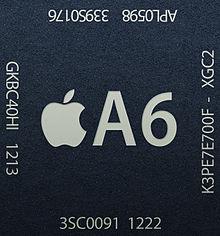

100% játékélmény

Az Apple úgy tervezte az A6 chipet, hogy az iPhone öszes funkciója kiemelkedő gyorsasággal működhessen. Az iPhone akkor is gyors, ha a legnagyobb grafikai igényű alkalmazásokat használod, a nagy képkockasebesség pedig még egyenletesebbé, mondhatni életszerűvé teszi a játékokat. Az A6 chip az iOS 6 rendszerrel szoros együttműködésben gondoskodik a páratlan energiatakarékosságról. Tehát nem kell üzemidőt áldoznod a gyorsaságért cserébe.